The Covered Call
Own the stock and sell a near-dated call against it for a net credit — a neutral income and repair strategy tailored to the retail trader mandate.
You already own the stock; now you rent it out. Selling a slightly-OTM ~3-4 week call harvests fast theta, lowers your average price, protects a dividend and sharpens your execution — all in one transaction, for a net credit, with capped upside.
The gist
- Definition: you are long the underlying stock AND you sell (write) a call against it for a net credit — a single, one-transaction strategy.
- Formalized attributes: Non-Directional · Neutral · Simple · One Transaction · Net Credit (upfront payment received) · Max Risk = Limited · Max Gain = Limited.
- Mechanics: sell slightly-OTM, near-dated calls (typically within the nearest month, ~3-4 week expiries) to harvest fast theta; conservative = sell a call well ITM (protection), aggressive = further OTM (higher return), moderate = at/half-in-half-out. It reduces portfolio volatility because you are selling the stock's volatility.
- Breakeven = stock cost basis − premium collected per contract. Max Gain = (strike − stock cost) + premium, realised if the stock is 'called away' / assigned at or above the strike.
- Insurance analogy: owning stock = owning a home; near-term ATM puts = travel insurance (definable catalyst); long-dated OTM puts = fire insurance (unforeseeable event); selling a covered call = renting the house out for income.
- IRA/mandate: covered calls are permitted in a US self-directed IRA (with signed broker disclosures) because the risk is offset by the long stock; naked calls/puts are NOT. International traders must run two accounts — pension (long stock) + a separate options account — and consolidate risk and P&L themselves.
- Four uses: (1) income on a winning long, (2) 'STOCK REPAIR' on a losing long, (3) 'DIVIDEND PROTECTION' over an ex-dividend date, (4) better execution on an intended new long built from scratch.
- STOCK REPAIR example: long at $100, now $93; sell the 2-week $97 call at $1.15 → average drops to $98.85, or to $99 if you buy the call back at $0.15.
- DIVIDEND PROTECTION: options do NOT reprice on the ex-dividend date (the dividend is already priced in — calls cheaper, puts richer), so you keep the call premium on top of the dividend.
- JNJ worked example: spot $133.15, 84c dividend ex-div Feb 26; sell 1× 135-strike Mar-2 call at 80c = $80 credit; breakeven $132.35; if called at $135 the stock P&L is $269, total $349, new theoretical execution $138.36; the $2-OTM 131 put trades ~$1.20 (~40c richer) because the dividend prices into puts, not calls.
- Rated MEDIUM in usefulness: capped upside plus weak protection if the stock falls a lot (only the credit hedges you). Most common mistake: refusing to exit when the stock will obviously rally through the strike — gap risk is unavoidable, stupidity is avoidable.
What the Covered Call Is
- First of three hedging videos — strategies that are genuinely useful for the retail trader mandate.
- You use it when you are ALREADY long a stock and want to generate returns while you expect the price to stay stable/neutral for a short period.
- You only have to write call options on stock you own; your expectation is the calls expire worthless so you pocket income on a stagnant position.
- It can also lower the average price on a losing long, and gives a small measure of downside protection (the credit).
The covered call is an income and management overlay on an existing long stock position, not a way to profit from options in isolation. Because you already own the shares, the short call is 'covered' and the strategy behaves as a neutral bet on the near term.
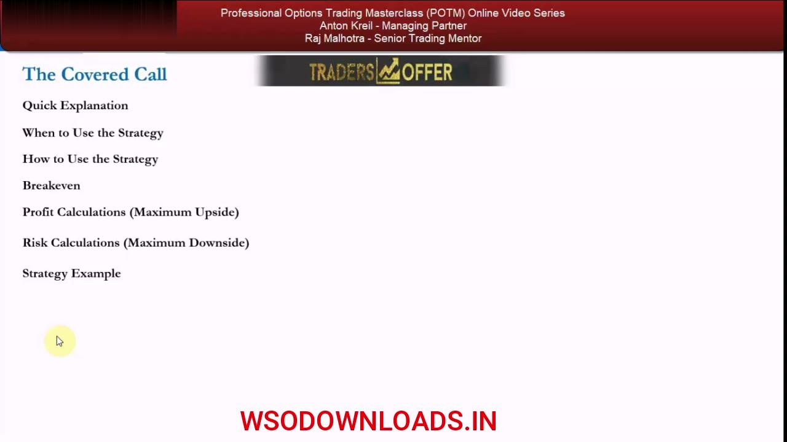
The Formalized Attributes
- Non-Directional Bet · Neutral Strategy · Simple · One Transaction.
- Net Credit — an upfront payment is received.
- Max Risk = Limited (you are long stock, so a rally that hurts the short call is offset by the stock).
- Max Gain = Limited — capped at the credit received plus the move up to the strike.
These seven attributes are the strategy template Anton reuses across the course. The two 'Limited' lines are the crux: your loss is bounded because you own the stock, and your gain is bounded because you sold away the upside above the strike.
The Insurance Analogy
- Owning a stock (or portfolio) = owning a home.
- Buying short-term at/near-the-money puts = travel insurance for a skiing holiday — a definable catalyst you expect to need cover for.
- Buying long-dated / way-OTM puts = fire insurance — protection against the unforeseeable 'house burns down' event.
- Selling a covered call = renting the house out for a period to make rental income while you think it won't move higher.
The analogy, borrowed from the Long Calls and Puts formalized video, frames each options overlay as a form of home insurance or income. Selling the covered call is the 'rent it out' move — you monetise a neutral view without selling the underlying asset.
The IRA & Retail Mandate Context
- The US government deems the covered call safe enough to run inside a self-directed IRA (with signed broker disclosures) — because the long stock offsets the dollar risk.
- Selling naked calls/puts is NOT allowed in an IRA (the downside can be huge); a trustee IRA can't trade options at all.
- Outside the US, pensions generally don't allow options — so international traders open a SEPARATE options account and put up extra capital.
- That means two accounts: pension (long stock) + options account; overall risk and P&L across both is your true wealth, which you must consolidate yourself.
Structure matters. US self-directed IRA holders can implement covered calls directly (speak to a tax advisor); everyone else runs a split-account setup and monitors consolidated risk in their own spreadsheets because the broker won't do it for them.
The Four Uses
- 1. Hedge a long stock position that is POSITIVE P/L and collect premium.
- 2. Hedge a long stock position that is NEGATIVE P/L and collect premium (the 'stock repair' setup).
- 3. Hedge a long stock position in a DIVIDEND-paying stock going ex-dividend very soon, and collect premium.
- 4. Get a 'better' EXECUTION price on an intended new long stock position (built from scratch).
Establishing a covered call has four main uses for the retail trader mandate. Anton walks through each in detail because together they add material value to a long-only book over time — three manage existing longs, one improves the entry on a new one.
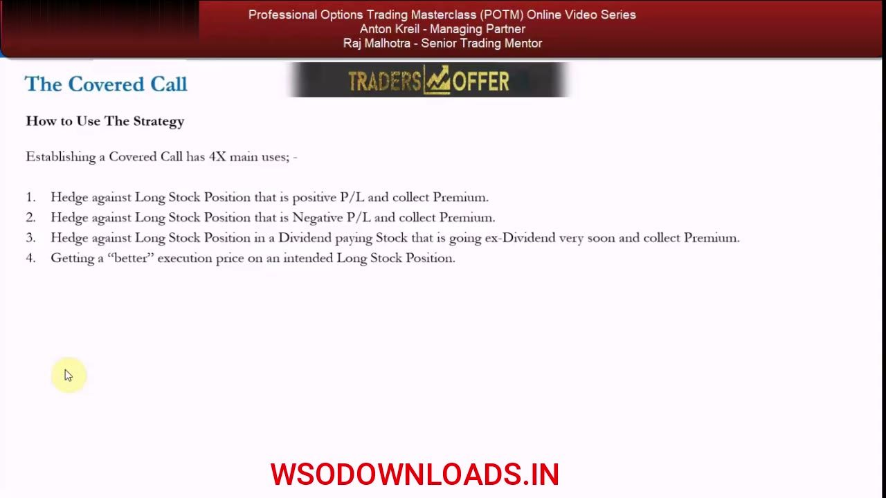
Use 1 — Income on a Winning Long
- Stocks never go up in a straight 45-degree line — there are periods of consolidation sideways or down inside a fundamental/technical uptrend.
- If your long-term view is bullish but you think the stock will struggle short term through a valuation/technical level, sell a short-term ATM/OTM call to collect premium instead of selling the stock and trying to buy it back lower.
- Choose the cap level yourself on a discretionary basis (no hard rules) and sell that strike; use ~3-4 week expiries to harvest theta.
- Breakeven = Strike − Premium Collected (per contract). Max gain if the stock closes exactly at the strike on expiration.
- Timing risk: ideally the call expires worthless just below the strike, THEN the stock rallies through the strike afterwards (when you're long-only again) so you capture the full move.
This is the core case — monetising the sideways patches inside an uptrend. The subtle part is timing: the strategy 'all-encompasses' both the credit while the call is on AND the upside on the stock after it expires worthless, so getting the sequence right maximises total return.
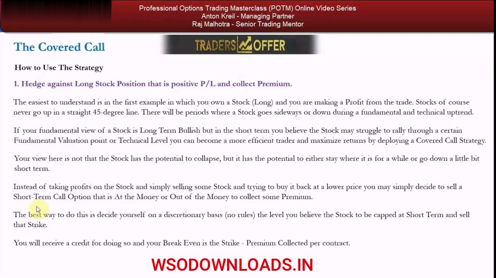
When It Is NOT the Right Tool
- The covered call is for a stock you believe will go up over the long term but drift sideways or down a small amount short term.
- It is NOT for a genuinely bearish view or a fear of a large fall — then you would sell the stock or buy a protective put.
- Watch the assignment/gap risk: above the strike your call can be assigned and you may have to sell stock; consider a stop at the strike level.
- Gap risk is unavoidable — an overnight bullish catalyst can open the stock 10/20/30% higher, blowing through any stop with no chance to trade out.
The covered call caps upside and only lightly cushions downside, so it must not be confused with a real hedge. If you seriously fear a big drop, a protective (long) put is the better instrument.
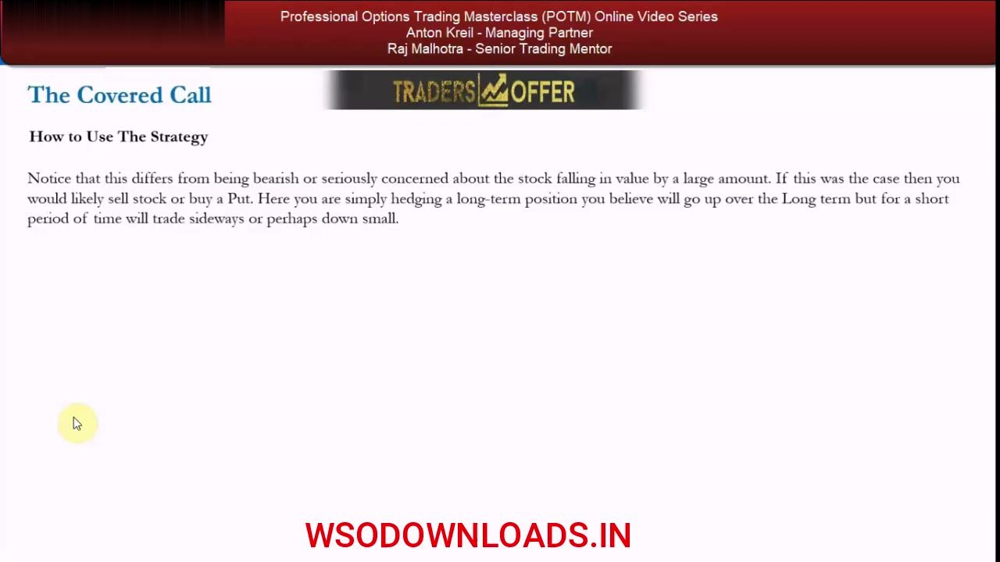
Use 2 — Stock Repair on a Losing Long
- Setup: long at $100, down 7% to $93 after 3 weeks, but you still believe the stock goes to $140 over 12 months (timing was just off).
- Sell the 2-week $97 call trading at $1.15; if it expires worthless your theoretical average price drops from $100 to $98.85 (perfectly hedged).
- You can also trade the option itself: buy it back at $0.15 to lock the gain → average price drops to $99.
- Net effect: you lower your basis and out-earn simply holding, WITHOUT cutting a position that could work — while reducing portfolio volatility by selling the stock's volatility.
Repairing a losing position: the same mechanics as the winning case, only the P&L starts negative. Anton stresses that the account won't re-price your average automatically — you either amend the average in your own spreadsheet or carry the options book as a separate consolidated asset.
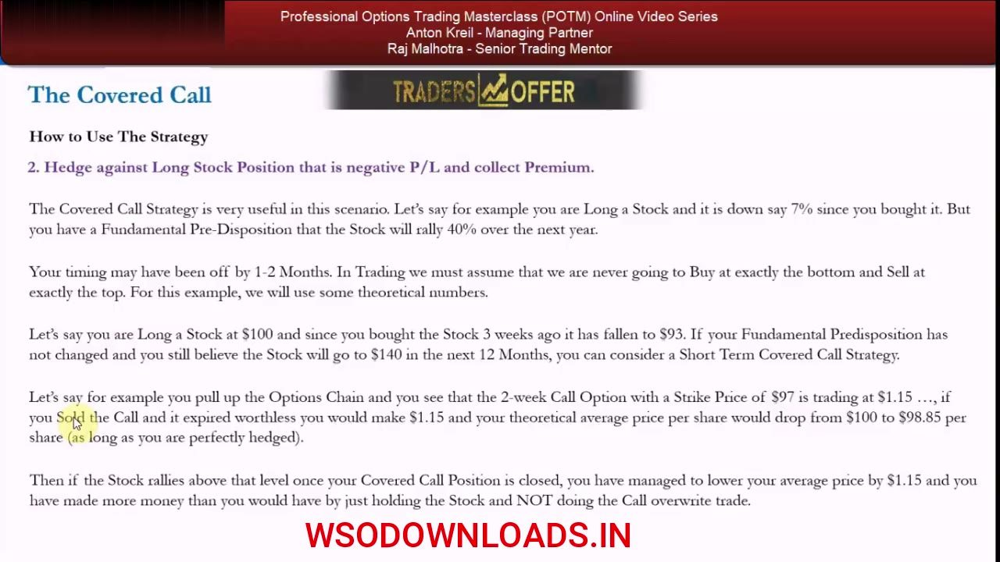
Use 3 — Dividend Protection (JNJ Setup)
- You own 100 shares of Johnson & Johnson (JNJ) bought at $140, now down $6.85 with the stock at $133.15 (sitting on Feb 19).
- On Feb 26 JNJ pays its quarterly dividend of 84c, so the stock will re-adjust DOWN by 84c on the ex-dividend date, all else equal.
- Key insight: when a stock goes ex-dividend the stock drops by the dividend, but the CALL and PUT prices do NOT re-adjust — the dividend is already priced in (calls cheaper, puts richer).
- So if you expect the stock to be 'sticky' and neutral into/through the ex-div date, selling a call lets you keep the premium on top of the dividend.
Because option premiums already discount the coming dividend, the ex-dividend re-pricing hits the stock but not your short call's average. That gap is exactly what 'dividend protection' harvests — the dividend on the stock side and the call premium on the options side.
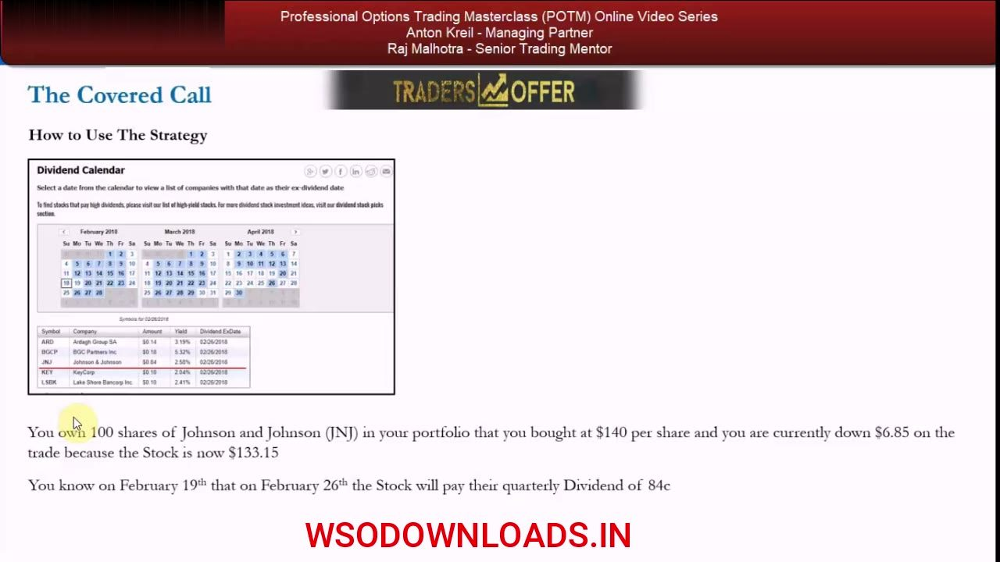
The JNJ Chart & Level
- JNJ 1-year daily chart: last 133.15, +1.92 (+1.46%), at the Feb 16 close.
- Price ran to a peak near ~147 in late January, sold off sharply to ~125, and recovered to ~133.
- You mark the 135 level — the strike above which you see no fundamental reason for the stock to rise by the Feb 26 ex-dividend close.
- You know the stock will drop automatically by the 84c dividend on the ex-dividend date.
The chart grounds the discretionary strike choice: given the technical picture and your neutral near-term view, 135 is the level the stock is unlikely to breach before the dividend, making it the natural call strike to sell.
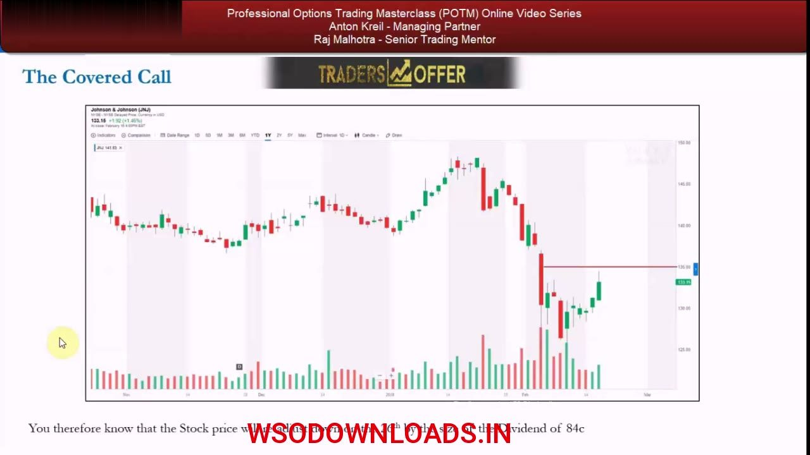
The Option Chain — Selling the 135 Call
- JNJ chain: Last 133.15, Bid 133.15 / Ask 133.38, High 134.45, Low 130.84, Volume 7,970,065, Hist Volatility 19.52%.
- Expiry selected is the Mar-2 (weekly) contract, calls on the left, puts on the right, split by the center strike column.
- You sell 1× the 135-strike March-2 call at 80c — you see no catalyst for the stock to rise above 135 (ex-dividend) by the Feb 26 close.
- The 135 call is ~$2 OTM; note the 131 put (also ~$2 OTM) is priced richer at ~$1.20.
This is the live execution: one covered call sold slightly OTM into a near-dated weekly to harvest theta into the dividend. The put/call price asymmetry on the chain is the visible fingerprint of the dividend being priced into puts rather than calls.
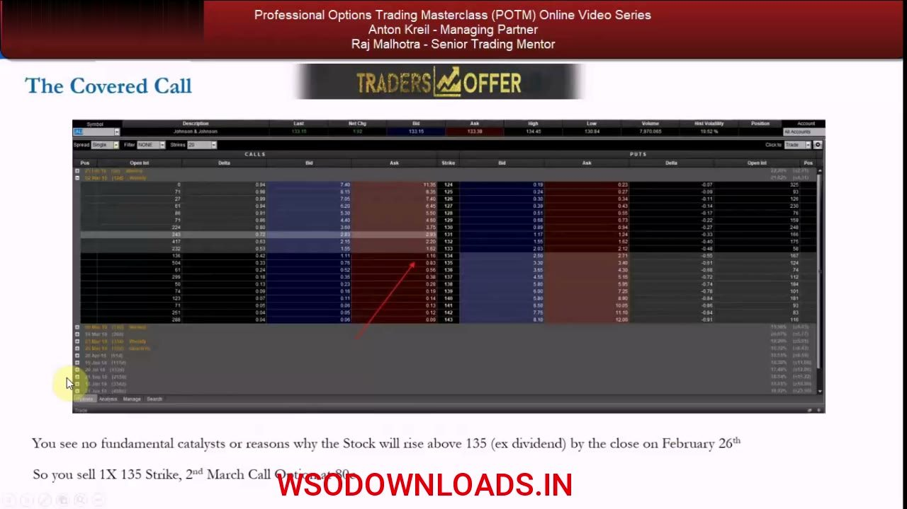
The Breakeven & Profit Math
- 1× contract = 100 shares = 100 × 80c = $80 credit.
- Breakeven = $133.15 (starting point) − $0.80 (credit) = $132.35.
- If JNJ closes at $135 on Mar 2, the stock leg makes {($135 − $133.15) + 84c dividend} × 100 = $269 (the $135 is the ex-dividend re-adjusted price).
- Total P/L = {$2.69 + 80c call credit} × 100 = $349.
- Execution improvement: 0.84 + 0.80 = $1.64; new theoretical execution = $140 − $1.64 = $138.36.
The worked math shows the two value streams stacking: 84c of dividend and 80c of call credit combine to $1.64, cutting the effective cost basis from $140 to $138.36. At the $135 close everything is maxed — the stock is called away and the call expires worthless simultaneously.
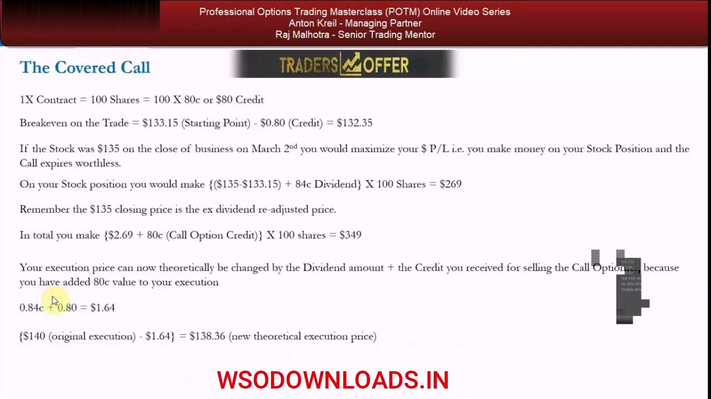
Stock Repair + Dividend Protection Combined
- Because you were underwater and used the covered call to 'improve' your execution, that part of the trade is called a 'STOCK REPAIR' strategy.
- Because you were protecting yourself from the dividend re-adjustment, that part is called a 'DIVIDEND PROTECTION' strategy.
- The JNJ example is a HYBRID — it combines both ways of adding value in a single covered call.
The one JNJ trade wears two labels at once: it repairs a losing basis and protects the dividend. Recognising the vocabulary ('stock repair', 'dividend protection') lets you spot when other traders describe these same covered-call use cases.
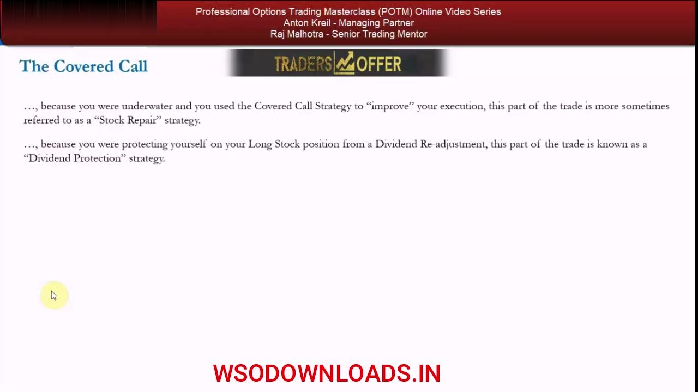
The Dividend Priced Into Puts, Not Calls
- The credit is small — 80c ($80 per contract) — on a call ~$2 OTM.
- The ~$2 OTM 131 put trades ~$1.20, about 40c higher, because the market knows the 84c dividend hits in 5 days and will re-price the stock down.
- The dividend re-adjustment is partially priced in already and will be 100% priced in by the ex-dividend date.
- If the stock fell or went ex-dividend badly, the call overwrite gives little downside protection — long puts would be better, but they cost you (a debit) when you're already underwater.
- If the stock rallied above $135 (breakeven, ex-dividend) you'd have been better off just long the stock and not selling the call.
The put/call premium asymmetry is the whole thesis made visible: puts richen and calls cheapen into the dividend. It also names the two honest limits — weak downside cover and forfeited upside above the strike — that keep the strategy rated MEDIUM.
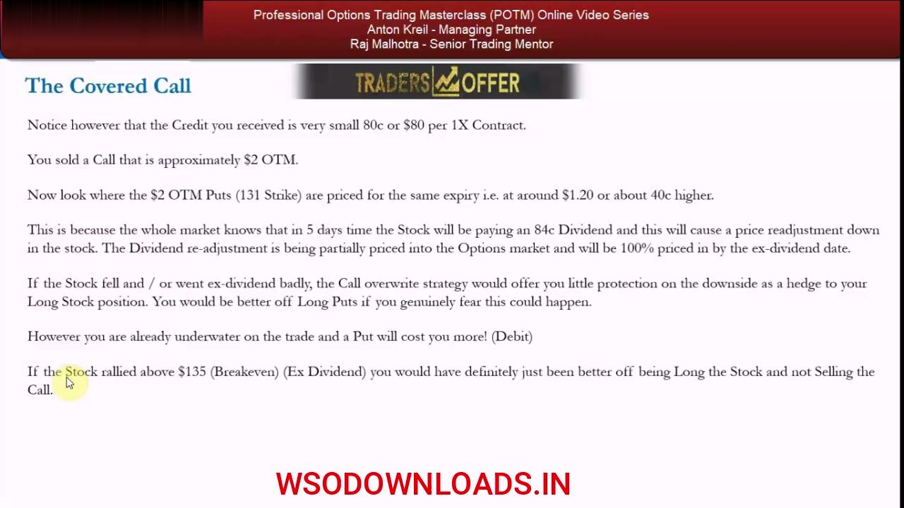
Conservative vs Aggressive, Risks & the Common Mistake
- Conservative = sell a call well IN the money (protection is the aim); aggressive = sell further OUT of the money (high returns); moderate = half-in / half-out / at the money.
- Diversify across different stocks, expirations and strikes — the portfolio goal is to reduce the volatility of risk and return.
- Two main risks: little protection if the stock falls a lot (only the credit hedges you), and no further profit if it rises above the strike (though you can always buy the call back).
- MEDIUM usefulness rating: high value in the four scenarios, but the weak deep-fall hedge and capped upside pull it down.
- Most common mistake: refusing to exit when it becomes obvious the stock will rally through your short strike — gap risk is unavoidable, but stupidity (the rabbit in the headlights) is totally avoidable.
View the covered call as a single entity — long stock plus short call, including all costs, margin and dividends. The dial from conservative (ITM) to aggressive (OTM) sets your protection-versus-return trade-off, and the cardinal sin is passively watching the stock breach your strike instead of buying the call back.
Glossary
- Covered CallBeing long the underlying stock AND selling (writing) a call against it for a net credit; the short call is 'covered' by the shares you own.
- Net CreditThe upfront premium received for the strategy; here it comes from selling the call.
- BreakevenFor a covered call, the stock cost basis (or starting price) minus the premium/credit collected per contract.
- Max GainLimited to (strike − stock cost) + premium, realised if the stock is called away at or above the strike.
- Called Away / AssignmentWhen the short call goes in the money and is exercised against you, forcing you to sell (deliver) your stock at the strike price.
- Theta / Time DecayThe erosion of an option's value as expiration approaches; near-dated (~3-4 week) short calls decay fastest, which the writer collects.
- Stock RepairUsing a covered call on a losing long to lower the effective average price and 'repair' the position (e.g. $100 basis → $98.85).
- Dividend ProtectionSelling a covered call over an ex-dividend date; because option prices already discount the dividend and don't re-adjust on ex-div, you keep the call premium on top of the dividend.
- Ex-Dividend DateThe date on which a stock trades without its next dividend; the stock price re-adjusts down by the dividend amount, all else equal, but option premiums do not re-price.
- Goes Ex-Dividend 'Well' / 'Badly''Well' = the stock rises on the ex-dividend re-adjustment day; 'badly' = it falls by more than the dividend re-adjustment.
- Self-Directed IRAA US retirement account where you run your own pension and can trade options (with signed disclosures); covered calls are allowed, naked calls/puts are not.
- Conservative vs Aggressive Covered CallConservative sells a call well ITM (protection); aggressive sells further OTM (higher return); moderate sits around the money.